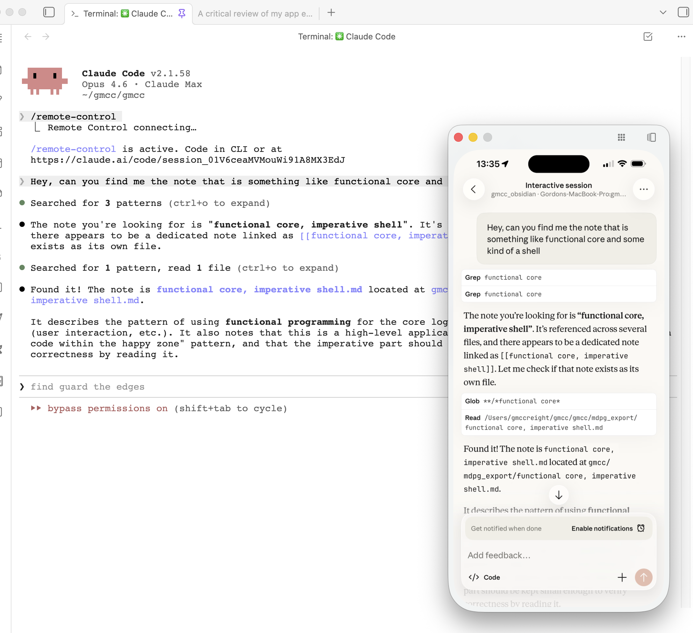

with claude remote you can interact with your code or notes from your phone, too
With docs - Claude remote control you can do stuff like example - using DeepSearch in Claude Code in a terminal in Obsidian to find a page about a software concept directly from your phone
